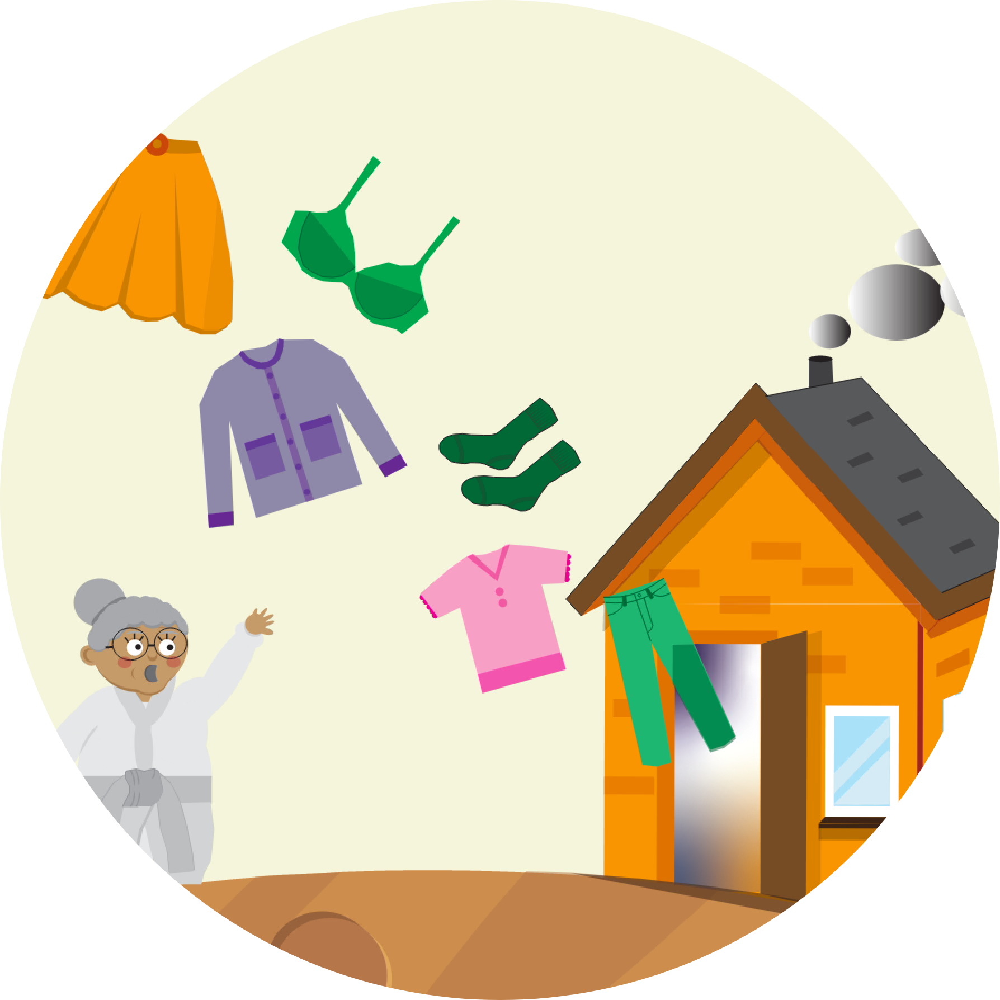
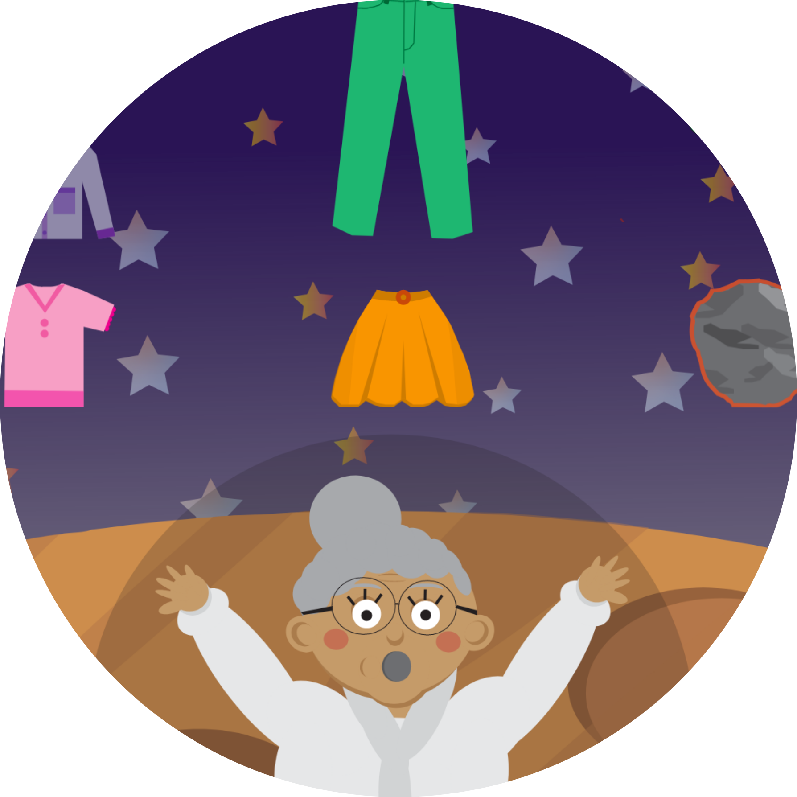

I temaet 'Grundlæggende Animation' har jeg arbejdet med javascript til at udvikle et spil. Alle elementer i spillet er udarbejdet i Illustrator. Jeg har igennem processen dokumenteret udviklingen af spillets elementer, og forbedret dem undervejs. Jeg har taget inspiration fra stilarten flat design, ved blandt andet at bruge mange farver, og give figurerne et simpel udtryk.
ANIMATION

